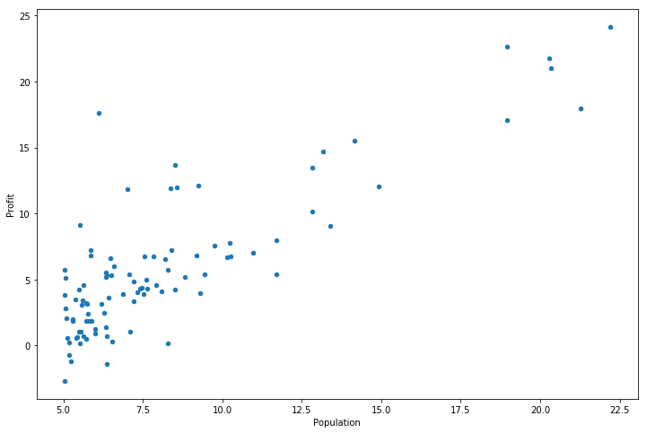

Python 3.6.6 |Anaconda custom (64-bit)| (default, Jun 28 2018, 11:27:44) [MSC v.1900 64 bit (AMD64)]
Type "copyright", "credits" or "license" for more information.
IPython 5.3.0 -- An enhanced Interactive Python.
? -> Introduction and overview of IPython's features.
%quickref -> Quick reference.
help -> Python's own help system.
object? -> Details about 'object', use 'object??' for extra details.
In [1]: import os
In [2]: import numpy as np
In [3]: import pandas as pd
In [4]: import matplotlib.pyplot as plt
In [5]: path = os.getcwd() + '\ex1data1.txt'
In [6]: data = pd.read_csv(path, header=None, names=['Population', 'Profit'])
In [7]: data.head()
Out[7]:
Population Profit
0 6.1101 17.5920
1 5.5277 9.1302
2 8.5186 13.6620
3 7.0032 11.8540
4 5.8598 6.8233
In [8]: data.describe()
Out[8]:
Population Profit
count 97.000000 97.000000
mean 8.159800 5.839135
std 3.869884 5.510262
min 5.026900 -2.680700
25% 5.707700 1.986900
50% 6.589400 4.562300
75% 8.578100 7.046700
max 22.203000 24.147000
In [9]: data.plot(kind='scatter', x='Population', y='Profit', figsize=(12,8))
Out[9]: <matplotlib.axes._subplots.AxesSubplot at 0x23a672ffe10>

In [10]: def computecost(X,y,theta):
...: cost = np.power(((X*theta.T)-y),2)
...: return np.sum(cost)/(2*len(X))
...:
In [11]: data.insert(0, 'ones' ,1)
In [12]: cols = data.shape[1]
In [13]: X = data.iloc[:,0:cols-1]
In [14]: y = data.iloc[:,cols-1:cols]
In [15]: X = np.matrix(X.values)
In [16]: y = np.matrix(y.values)
In [17]: theta = np.matrix(np.array([0,0]))
In [18]: computecost(X,y,theta)
Out[18]: 32.072733877455676
In [19]: